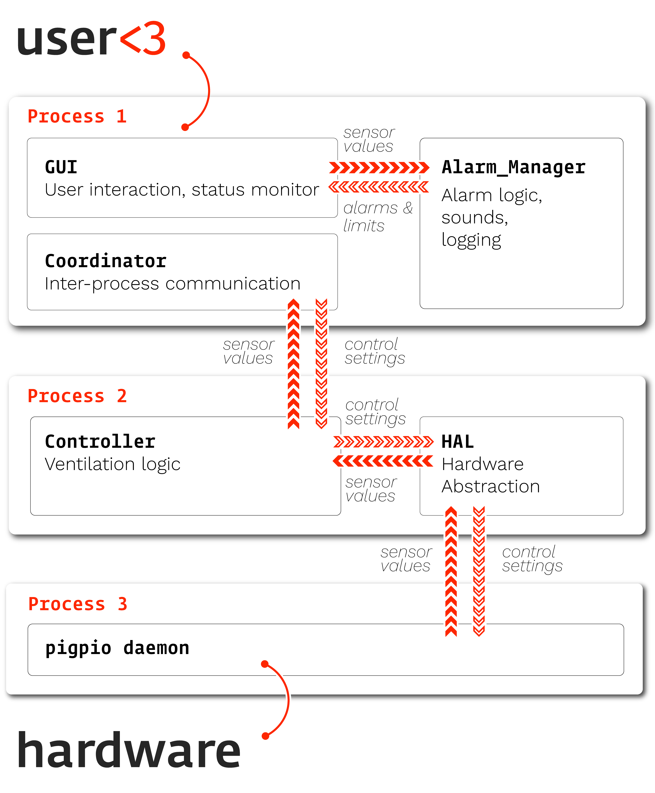

Modularity - Basics#
The essence of modularity is to write code that never does or depends on anything implicitly.
Interfaces and Implementation#
Separate interfaces from implementation - Things should have a well defined means of interacting with them that should remain relatively stable. They can then rely on private functions or methods that are not supposed to be called from other code. This is the notion of information hiding (and when it fails, information leakage). The simplest notion of an interface is a function signature (the arguments that it accepts), but as we get into more complicated examples we’ll see different types of interfaces. Interfaces, abstractly, are the places where you mark of what one piece of code should do — and thus what it should not do — and how other things should make it do those things.
Example from PVP#

We have defined not only the individual components of the system, but also how they are allowed to communicate. By carefully limiting how much each other part of the system “knows” about the others, we make sure that changes don’t cascade from one part of the system to the others. The types “sensor values” and “control settings” are well defined, and we have written tests that ensure each of the modules can still handle each of the basic types.
For example, the Alarm system emits an Alarm type that explicitly defines what properties it should have and
raise an error if they aren’t present:
from pvp.alarm import AlarmType, AlarmSeverity
import time
class Alarm:
"""
Representation of alarm status and parameters
Parameterized by a :class:`Alarm_Rule` and managed by :class:`Alarm_Manager`
"""
def __init__(self,
alarm_type: AlarmType,
severity: AlarmSeverity,
start_time: float = None):
"""
Args:
alarm_type ( :class:`.AlarmType` ): Type of alarm
severity ( :class:`.AlarmSeverity` ) : Severity of alarm
start_time (float): Timestamp of alarm start, (as generated by ``time.time()``
Attributes:
id (int): unique alarm ID
end_time (None, float): If None, alarm has not ended. otherwise timestamp
active (bool): Whether or not the alarm is currently active
"""
assert isinstance(severity, AlarmSeverity)
self._severity = severity
assert isinstance(alarm_type, AlarmType)
self._alarm_type = alarm_type
if start_time is None:
self.start_time = time.time()
else:
assert isinstance(start_time, float)
self.start_time = start_time
It doesn’t matter to the GUI how the alarm manager creates the alarm description, and it doesn’t matter to the alarm manager how the GUI uses the Alarm, but they interact using the Alarm object as an interface1
Functions#
Some basic principles for writing modular functions:
Every function should do one thing, and that one thing should be as specific as possible. Rather than a function called “
analyze_data,” write 20 functions that are each like “sort_trials,” “count_spikes,” etc.A corrolary is that functions should be short - think < 30 lines or so (though this is not hard or fast at all)
Never rely on global workspace variables or the working directory. Your function should take as arguments everything that it needs to know, and return everything that it has done — or in the case of functions that write data to disk (and so don’t return anything) return some status code that the file write was successful or not.
Avoid nested loops inside a single function. Instead encapsulate the logic of a single operation and then, if needed, wrap it in another function that can call it multiple times.
Write one function to do one operation – rather than a family of functions that each do a slightly different version of the same task, make the function able to have different functionality with optional arguments. If that’s impossible, it’s a sign that a deeper refactoring is needed. If you have a dozen different ways of loading similar data, you’ll need a dozen different packages to analyze it!
Worked Example#
How can we refactor this function for extracting deeplabcut points out to be more flexible?
import pandas as pd
import numpy as np
def getmidpoint(pt1,pt2):
'''
'''
midpoint=0.5*(pt1+pt2)
return midpoint
def extract_points(file, bodyparts, fr=200, pix2cm=15.8, thresh=0.7 ):
'''
function to extract mouse and cricket xy positions from DLC output csv
will also get the likelihood values for cricket positions
can be adapted later to add extraction of likelihood for the mouse
Args:
file (str): filename/ path to the DLC output
bodyparts (list): list of the bodypart labels from DLC you need
added as an input since names vary across models
fr (int): framerate of videos, default=200
pix2cm (int): conversion from pixels to cm, default=15.8 (needs to be checked)
thresh (int): threshold for likelihood values, default=0.7
Returns:
mouse_xy (:class:`numpy.ndarray`): xy coordinates for the mouse across the trial
cricket_xy (:class:`numpy.ndarray`): xy coordinates for the cricket across trial, cricket_xy is filtered to remove points with low likelihood
cricket_p (:class:`numpy.ndarray`): likelihood values of cricket points
'''
#set the constant values that will be used throughout
#load relevant dlc points from the csv, limits the amount you have to work with
data=pd.read_csv(file, skiprows=[0,1], header=[0,1])
data=data.loc[:, bodyparts]
#create 2d array for mouse xy coordinates
#right now indexing df depends on order of your bodyparts lists, find a better way to deal with this
rear_x=data[bodyparts[0],'x'].to_numpy()
rear_y=data[bodyparts[0],'y'].to_numpy()
lear_x=data[bodyparts[1],'x'].to_numpy()
lear_y=data[bodyparts[1],'y'].to_numpy()
rear_xy=np.asarray([rear_x,rear_y])
lear_xy=np.asarray([lear_x,lear_y])
headbase_x=data[bodyparts[4],'x'].to_numpy()
headbase_y=data[bodyparts[4],'y'].to_numpy()
headbase_xy=np.asarray([headbase_x,headbase_y])/pix2cm
mouse_xy=getmidpoint(rear_xy,lear_xy)/pix2cm
#extract cricket likelihood and xy coordinates, same indexing issue
#average function?
cricket_p=(data[bodyparts[2],'likelihood'].to_numpy()+data[bodyparts[3],'likelihood'].to_numpy())/2
#add pvalues to the same array as xy
cricket_x=(data[bodyparts[2],'x'].to_numpy()+data[bodyparts[3],'x'].to_numpy())/(2*pix2cm)
cricket_y=(data[bodyparts[2],'y'].to_numpy()+data[bodyparts[3],'y'].to_numpy())/(2*pix2cm)
thresh_cricket_x=cricket_x.copy()
thresh_cricket_x[cricket_p<thresh]=np.nan
thresh_cricket_y=cricket_y.copy()
thresh_cricket_y[cricket_p<thresh]=np.nan
cricket_xy=[thresh_cricket_x, thresh_cricket_y]
return mouse_xy, cricket_p, cricket_xy, rear_xy, lear_xy, headbase_xy
We’ll do two major things now and then revisit this as we learn a bit more about classes and types.
Separate I/O from analysis#
The first thing we do is load the data using pd.read_csv from a path that we are given. Then,
because the data is in a pretty awkward format, we are forced to hardcode a lot of the rest of the function. That’s a problem
because there are a lot of times when we want to use data from DeepLabCut, and is hard to reuse this for a different
project.
We can make the function a bit more general and do ourselves some favors in data formatting by writing a separate loading function
from pathlib import Path
import pandas as pd
from typing import Dict
def load_tracks(file:Path) -> Dict[str,pd.DataFrame]:
"""
Load tracks estimated from DLC output in the form of:
| scorer | DLC... | DLC... | DLC... | DLC... | DLC... | DLC... |
|-------------|-------------|---------|------------|-------------|---------|------------|
| individuals | mouse | mouse | mouse | mouse | mouse | mouse |
| bodyparts | nose | nose | nose | Rear | Rear | Rear |
| coords | x | y | likelihood | x | y | likelihood |
| 0 | 0.995999992 | 1 | | | | |
| 1 | 669.523 | 1 | 298.825 | 0.995000005 | | |
| 2 | 673.518 | 299.602 | 631.271 | | | |
| 3 | 298.639 | 674.286 | 1 | 299.904 | 633.732 | 1 |
| 4 | 298.605 | 674.286 | 1 | 299.686 | 633.732 | 1 |
To a dictionary of dataframes that each have three columns, ``x``, ``y``, and ``probability``
Args:
file (:class:`pathlib.Path`): Location of DLC output .csv
Returns:
Dict[str, pandas.DataFrame]: Dataframe for each extracted part
"""
# Skip the first two rows: scorer and animal name
# Treat the next two rows as the index: bodypart and x,y,likelihood values
data=pd.read_csv(file, skiprows=[0,1], header=[0,1])
# make separate dataframes for each bodypart
# .columns returns the column indices, which map onto the header we declared above
bodyparts = {
part:data[part]
for part in data.columns.levels[0]
}
return bodyparts
This gives us something like this:
>>> tracks = load_tracks('data/sky_mouse_example.csv')
>>> tracks.keys()
dict_keys(['Lear', 'Rear', 'anteriorC', 'bodyparts', 'headbase', 'nose', 'posteriorC', 'spine', 'tailbase'])
>>> tracks['Lear']
x y likelihood
0 NaN NaN 1.0
1 314.868 636.708 1.0
2 321.200 642.990 NaN
3 324.393 644.676 1.0
4 324.393 644.676 1.0
Generalize Repeated Operations#
The rest of the function
extracts out x/y coordinate pairs into n x 2 numpy arrays,
computes midpoints, for example the center of the mouse’s head from the ear positions
filters points based on the probability.
transforms pixels to centimeters
Those sound like three separate functions to me!
One of those already is its own function (getmidpoint), and we can make that just midpoint because
the get is implicit in it being a function that returns something. Since the conversion to cm is just
multiplication by a scalar, we’ll save that as an example for the Classes section.
(my docstrings are bad here just because I’m in a hurry)
import pandas as pd
import numpy as np
def df_to_xy(df:pd.DataFrame) -> np.ndarray:
"""
Given a dataframe with `x` and `y` columns from :func:`load_tracks`,
return an ``n x 2`` array of x/y coordinates
"""
return df[['x','y']].to_numpy()
def probability_thresh(df:pd.DataFrame, thresh=0.7) -> pd.DataFrame:
"""
Given a dataframe with `x` and `y` columns from :func:`load_tracks`,
set all coordinates below a thrshold to NaN.
"""
df[df['likelihood']<thresh, ('x','y')] = np.nan
return df
Now we can compose these functions to make a nice midpoint function that takes our data and finds midpoints based off part names
from typing import Dict
def part_midpoints(df_dict:Dict[str, pd.DataFrame], part1:str, part2:str) -> np.ndarray:
xy_1 = df_to_xy(df_dict[part1])
xy_2 = df_to_xy(df_dict[part2])
return getmidpoint(xy_1, xy_2)
We’ve now split up our function into a few parts that make it so we don’t have to repeat ourselves as much, so now the part that’s unique to this experiment can look more like this
data = load_tracks('data/sky_mouse_example.csv')
# extract mouse things
mouse_xy = part_midpoints(data, 'Lear', 'Rear')
headbase_xy = df_to_xy(data['headbase'])
rear_xy = df_to_xy(data['Rear'])
lear_xy = df_to_xy(data['Lear'])
# extract cricket things
for cricket_part in ['anteriorC', 'posteriorC']:
data[cricket_part] = probability_thresh(data[cricket_part], thresh=0.7)
cricket_xy = part_midpoints(data, 'anteriorC', 'posteriorC')
This is still a bit messy because we are creating a large amount of independent variables that are very similar. We’ll show how to encapsulate that a bit later, to get there let’s talk a bit about clases.
Classes#
There’s still plenty of implicitness in the above functions: we specify in our type hints that we take a pandas DataFrame, and then in the docstring describe what it should consist of, but we can do better! We can, make a specific class that represents our deeplabcut coordinates!
Classes let us encapsulate related sets of variables (attributes) and functions (methods).
A few more basic principles:
Declare all attributes that your object has in
__init__- you shouldn’t get an object that’s missing an attribute that you expect it to have.Keep splitting up your functions! but you don’t want all of them to be available to the user, then you have to make sure that they stay mostly consistent over time. Instead, choose which parts you want to expose as the interface and keep the rest private to indicate that people shouldn’t rely on those. In python that’s indicated by putting an
_underscore()below a method name.Use properties for static attributes that are derived from other attributes. For example, if you have a
volumeclass that takes in some volume as Liters, you can define amLproperty that returns the current volume / 1000.
For example, we can imagine making a wrapper around some common DeepLabCut data idioms like this (reusing some of our previous functions just for funzies to show how simple functions let us use them in a bunch of different places):
from pathlib import Path
from typing import Dict, Optional, List
import pandas as pd
import numpy as np
class DLCPart:
"""
An individual
"""
def __init__(self, name:str, df:pd.DataFrame):
self.name = name
self.x = df['x']
self.y = df['y']
self.likelihood = df['likelihood']
self._df = df
@property
def xy(self) -> np.ndarray:
return df_to_xy(self._df)
class DLCData:
def __init__(self, parts:Dict[str,pd.DataFrame], scorer:Optional[str]=None):
self.scorer = scorer
self._parts = {key:DLCPart(name=key, df=part) for key, part in parts.items()}
@classmethod
def from_path(cls, file:Path):
return cls(parts=load_tracks(file))
@property
def parts(self) -> Dict[str,pd.DataFrame]:
return self._parts.copy()
@property
def part_names(self) -> List[str]:
return list(self._parts.keys())
def __getattr__(self, item):
"""
If we don't have an attribute, see if it's one of our parts and return that
Only called when an attr isn't found, so we don't have to handle that case specifically
"""
try:
return self._parts[item]
except KeyError:
# this is actually an attribute error, trivial change
raise AttributeError(f"No attribute or part named {item} found")
Here we’re using a composition strategy where one class uses another class as its attributes: the two are defined independently, but used together. But since we have made an explicit class with specific attributes and methods, our static analysis tools will tell us if we try to do something impossible with it.
Since we can contain an arbitrary DLC dataset in that object and get all the other representations that we use in our downstream analysis functions, we no longer need a specific function that has a bunch of hardcoded variable names, and we can start removing them from our other analysis functions, eg. those in geometries
We can then use this class like
data = DLCData.from_path('my_data.csv')
data.Lear.xy
which gives an array equivalent to
tracks = load_tracks('data/sky_mouse_example.csv')
lear_xy = df_to_xy(tracks['Lear'])
Inheritance#
Inheritance lets you group things together and elaborate their function.
Data -> specific format
Example from autopilot and GPIO classes and then registry
Abstract Methods#
Example from autopilot subject class
Types and Type Hints#
Python isn’t a strongly typed language (ie. type hints are not enforced), but type hints let us make use of static analysis tools that let us write code with more confidence and make our interfaces more explicit.
Say we do want to make a specific class for our prey capture data, maybe for the purpose of sharing it, or maybe there is some analysis function that is truly unique to prey capture! who knows?
Example of making a function using the DLCData class.
On Notebooks…#
Notebooks are cool, but they should be used as examples of how to use code rather than contain any original code.
Notebooks can’t be reused, imported, or repurposed. They contain a ton of implicit dependencies on
- 1
or maybe more appropriately as something that negotiates an interface, whatevs same difference to us here.